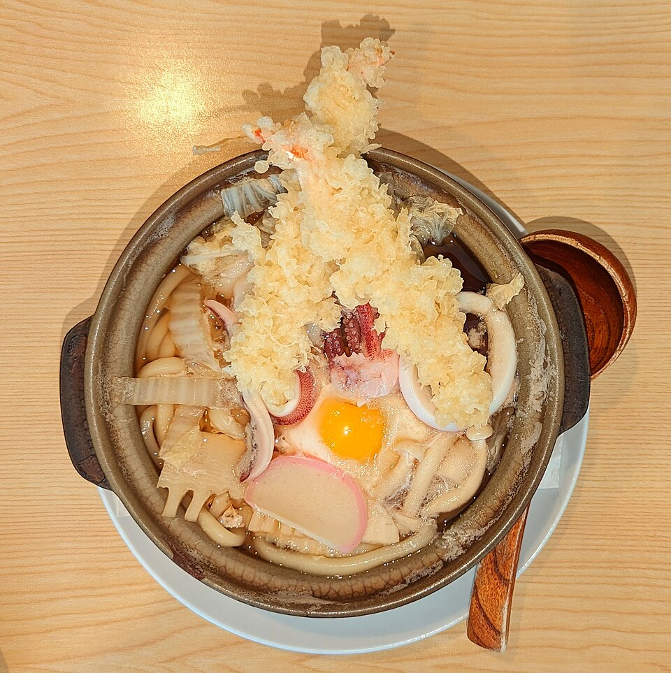

Frutos do mar · Camarões e frutos
Tempura de camarão (Ebi no Tempura)

Ingredientes
- ½ kg de camarões
- 1 colher (chá) de sal
- ½ colher (chá) de glutamato monossódico
- 1 colher (sopa) de saquê
- Koromo: 1 ovo, 1 xícara de água bem gelada, 2 xícaras de farinha de trigo
- Óleo para fritar
Modo de preparo
- Limpe os camarões deixando cabeça e cauda; abra pelo dorso. Tempere com sal, glutamato e saquê; faça pequenos cortes transversais.
- Aqueça o óleo. Misture ovo e água gelada; junte a farinha misturando de leve, sem bater. Empane e frite.
Observação
Mantenha a massa gelada (cubos de gelo em saco na tigela). Fonte: Revista Nihon Ryoori / Cozinha Japonesa.